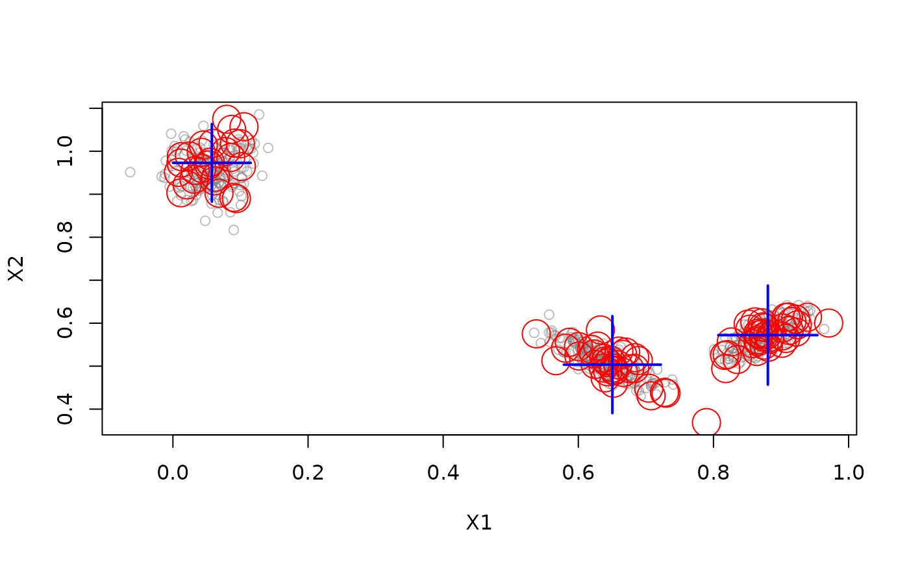

Combines an online clustering component (DSC_Micro) and an offline reclustering component (DSC_Macro) into a single process.
Value
An object of class DSC_TwoStage (subclass of DSC,
DSC_Macro) which is a named list with elements:
description: a description of the clustering algorithms.micro: The DSD used for creating micro clusters in the online component.macro: The DSD for offline reclustering.state: an environment storing state information needed for reclustering.
with the two clusterers. The names are “
Details
update() runs the online micro-clustering stage and only when macro cluster
centers/weights are requested using get_centers() or get_weights(), then the offline stage
reclustering is automatically performed.
Available clustering methods can be found in the See Also section below.
See also
Other DSC_TwoStage:
DSC_DBSTREAM(),
DSC_DStream(),
DSC_evoStream()
Other DSC:
DSC(),
DSC_Macro(),
DSC_Micro(),
DSC_R(),
DSC_SlidingWindow(),
DSC_Static(),
animate_cluster(),
evaluate.DSC,
get_assignment(),
plot.DSC(),
predict,
prune_clusters(),
read_saveDSC,
recluster()
Examples
stream <- DSD_Gaussians(k = 3, d = 2)
# Create a clustering process that uses a window for the online stage and
# k-means for the offline stage (reclustering)
win_km <- DSC_TwoStage(
micro = DSC_Window(horizon = 100),
macro = DSC_Kmeans(k = 3)
)
win_km
#> Sliding window + k-Means (weighted)
#> Class: DSC_TwoStage, DSC_Macro, DSC
#> Number of micro-clusters: 0
#> Number of macro-clusters: 0
update(win_km, stream, 200)
win_km
#> Sliding window + k-Means (weighted)
#> Class: DSC_TwoStage, DSC_Macro, DSC
#> Number of micro-clusters: 100
#> Number of macro-clusters: 3
win_km$micro
#> Sliding window
#> Class: DSC_Window, DSC_Micro, DSC_R, DSC
#> Number of micro-clusters: 100
win_km$macro
#> k-Means (weighted)
#> Class: DSC_Kmeans, DSC_Macro, DSC_R, DSC
#> Number of micro-clusters: 100
#> Number of macro-clusters: 3
plot(win_km, stream)

evaluate_static(win_km, stream, assign = "macro")
#> Evaluation results for macro-clusters.
#> Points were assigned to macro-clusters.
#>
#> numPoints numMicroClusters numMacroClusters
#> 1.000000e+02 1.000000e+02 3.000000e+00
#> noisePredicted SSQ silhouette
#> 0.000000e+00 3.376204e-01 7.938251e-01
#> average.between average.within max.diameter
#> 6.548251e-01 6.886761e-02 2.493522e-01
#> min.separation ave.within.cluster.ss g2
#> 9.837076e-02 3.222057e-03 9.963625e-01
#> pearsongamma dunn dunn2
#> 7.669822e-01 3.945053e-01 3.424728e+00
#> entropy wb.ratio numClasses
#> 1.095559e+00 1.051695e-01 3.000000e+00
#> noiseActual noisePrecision outlierJaccard
#> 0.000000e+00 NaN NaN
#> precision recall F1
#> 1.000000e+00 1.000000e+00 1.000000e+00
#> purity Euclidean Manhattan
#> 1.000000e+00 1.000000e+00 1.000000e+00
#> Rand cRand NMI
#> 1.000000e+00 1.000000e+00 1.000000e+00
#> KP angle diag
#> 1.000000e+00 1.000000e+00 1.000000e+00
#> FM Jaccard PS
#> 1.000000e+00 1.000000e+00 1.000000e+00
#> vi
#> 0.000000e+00
#> attr(,"type")
#> [1] "macro"
#> attr(,"assign")
#> [1] "macro"